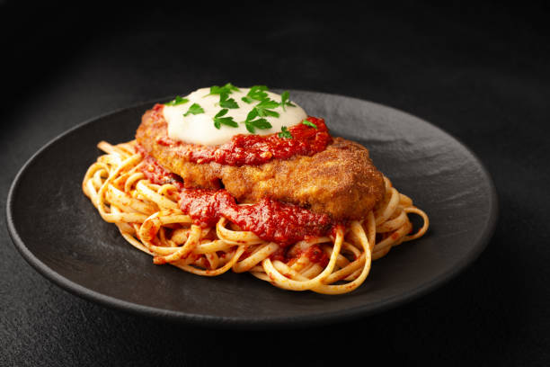

Home
Chicken Parmesan

Make a classic, comforting chicken parmesan recipe with crispy breaded chicken, savory marinara sauce, and melted mozzarella.
Ingredients
Chicken & Breading
- Chicken breasts: 4 boneless, skinless cuts (pounded to 1/2-inch thickness)
- Eggs: 2 large (beaten)
- Breadcrumbs: 1 cup Italian seasoned or Panko
- Flour: 1/2 cup all-purpose
- Olive oil: 1/4 cup for pan-frying
- Seasonings: Salt, black pepper, and garlic powder to taste
Assembly & Toppings
- Marinara sauce: 2 cups (homemade or store-bought)
- Mozzarella cheese: 1 cup shredded or sliced fresh mozzarella
- Fresh basil: Chopped for garnish
Instructions:
- Prep and Dredge
- Season the pounded chicken breasts generously with salt, pepper, and garlic powder.
- Set up a breading station with three shallow bowls: one with flour, one with the beaten eggs, and one mixing the breadcrumbs and parmesan.
- Coat each chicken breast in flour (shake off excess), dip in egg, and press firmly into the breadcrumb mixture until fully coated.
- Fry until Golden
- Heat the olive oil in a large skillet over medium-high heat.
- Fry the chicken for 3 to 4 minutes per side until the crust is deeply golden brown and crispy.
- Remove the chicken and transfer to a paper-towel-lined plate to drain.
- Layer and Bake
- Preheat your oven to 400°F (200°C).
- Spread a thin layer of marinara sauce across the bottom of a baking dish.
- Arrange the fried chicken breasts in the dish, spoon the remaining marinara over each piece, and top generously with mozzarella cheese.
- Bake for 15 minutes until the chicken is cooked through (165°F) and the cheese is bubbling and melted. Garnish with fresh basil before serving.